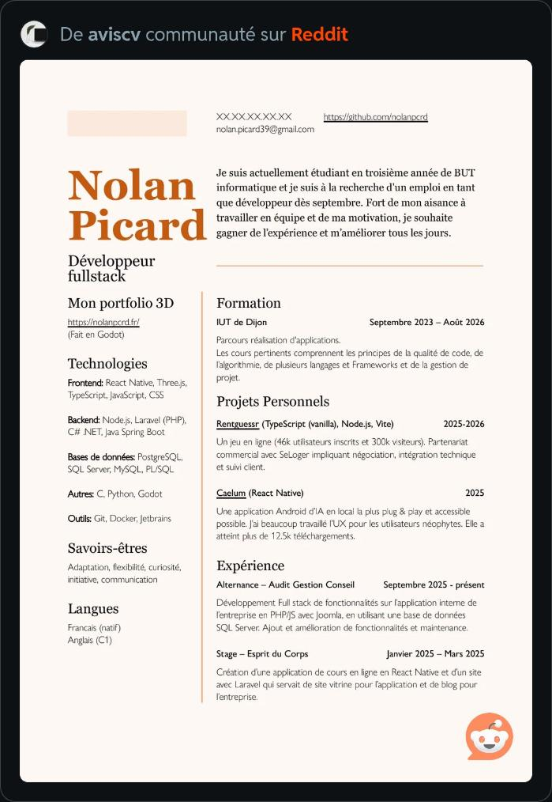
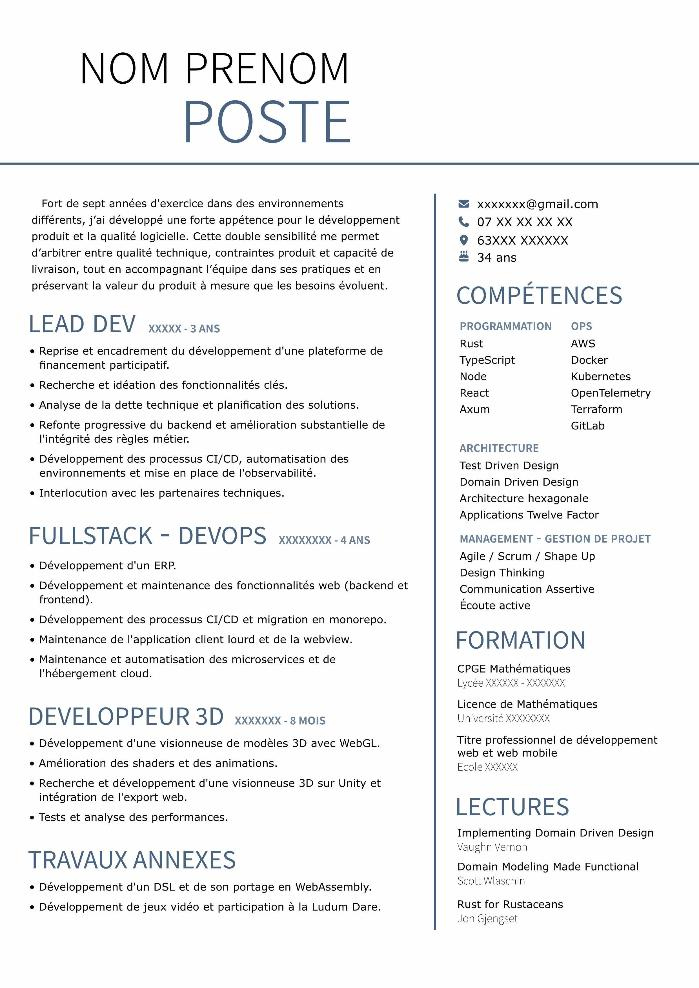
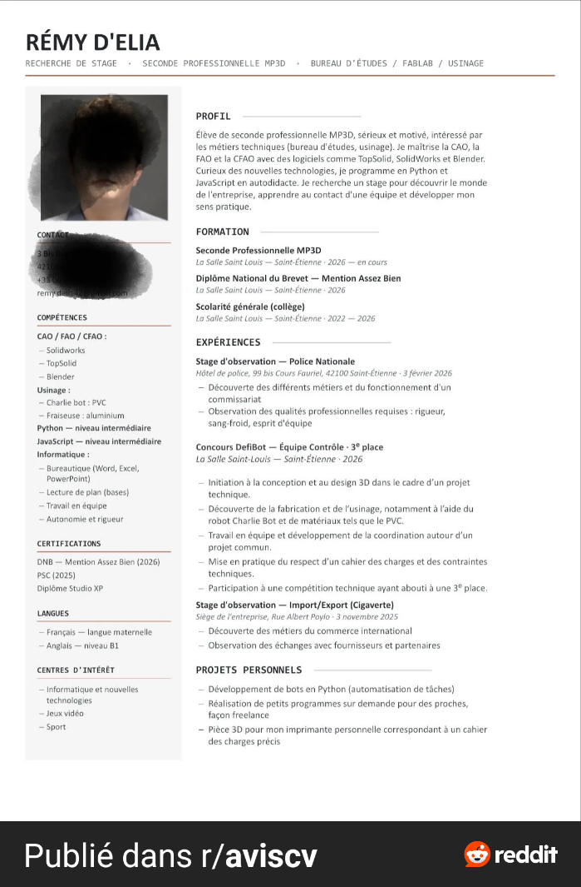
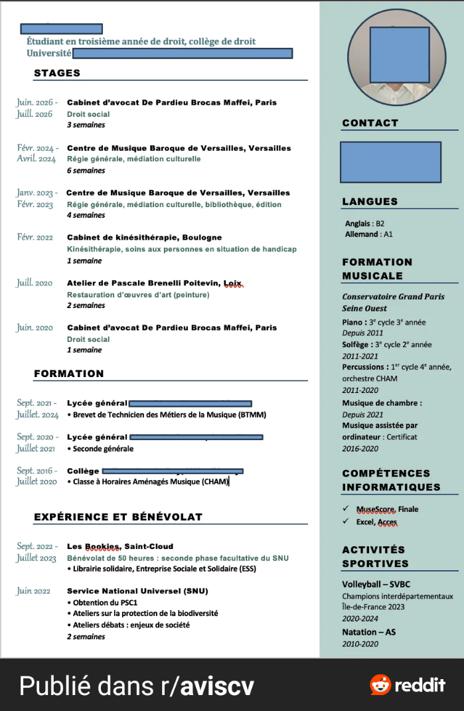
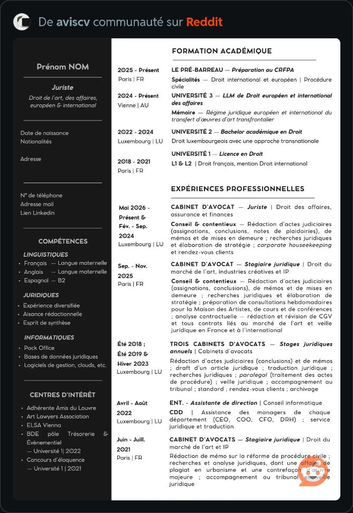

Maquette : planches « Éditorial » et « Chronologique »
Préparée le 2026-10-06 pour validation. Rien n'est codé. Ce sont des dessins (HTML) faits pour comparer avec tes exemples, avec un CV fictif ; le vrai rendu viendra du moteur après ton accord. Chaque planche se règle avec les boutons : la configuration résultante s'écrit en dessous.
- Éditorial : quelles variantes construire (A « nom en pile », B « nom typographique »), et quels réglages garder (colonne à gauche ou à droite, trait vertical, teinte de page, police à empattement).
- Chronologique : la durée en italique, le lieu dans la marge, la colonne à droite ou à gauche, et si on accepte le calcul de durée (voir le risque plus bas).
- Les noms et leur place : ce sont des modèles de l'allure Sobre.
1. Éditorial (famille B, allure Sobre)
D'après tes exemples 1, 7 et 17 : un en-tête typographique (grand nom), une colonne étroite avec un trait vertical, pas de fond coloré.



Ce que le moteur sait déjà faire, et ce qui est nouveau
| Élément | Aujourd'hui | Coût et risque |
|---|---|---|
| Deux colonnes, colonne étroite | Existe (Épuré, Standard) | Aucun |
| Trait vertical entre les colonnes | Existe (« Trait entre les deux colonnes ») | Aucun |
| Colonne étroite à droite | Existe sur certains modèles (« colonnes inversées ») | À vérifier pour ce modèle |
| Police du nom à empattement | Georgia et Garamond existent (police du CV entier) | Réglage « police du nom » : nouveau, faible. Word : Georgia est présente sur Windows et Mac |
| Grand nom en pile | Nouveau (en-tête sobre) | Moyen. Word : deux lignes de texte, pas de dessin, donc sûr |
| Teinte de page (crème) | Nouveau : le fond de page est blanc en dur | PDF : facile. Word : une couleur de page ne s'imprime pas par défaut ; il faudrait un grand rectangle de fond, ou ne pas l'offrir dans Word |
2. Chronologique (famille C, allure Sobre)
D'après tes exemples 4 et 16 : les dates (et parfois le lieu) dans la marge à gauche de chaque expérience, une colonne claire pour le reste, la durée en italique.


Ce que le moteur sait déjà faire, et ce qui est nouveau
| Élément | Aujourd'hui | Coût et risque |
|---|---|---|
| Dates dans la marge | Existe (modèle Sobre « Photo et frise »), d'après l'analyse du 2026-10-01, à revérifier dans le code | Faible. Word : déjà géré pour ce modèle |
| Colonne claire avec photo ronde | Photo ronde et colonne pleine hauteur : existent (Colonne claire) | Faible |
| Colonne à gauche ou à droite | « Colonnes inversées » : sur certains modèles | À vérifier |
| Lieu dans la marge | Nouveau (le lieu suit aujourd'hui le poste) | Faible à moyen |
| Durée en italique | Nouveau : la durée est calculée, elle n'est pas saisie | Risque de contenu (voir l'encadré) |
3. Mes recommandations
| Choix | Recommandé | Pourquoi |
|---|---|---|
| Éditorial : variantes à construire | A seule d'abord (nom en pile). B plus tard si tu la veux | A reprend l'exemple 1 et réutilise le plus de l'existant ; B demande un deuxième en-tête et un titre de rubrique en grand |
| Teinte de page | Ne pas l'offrir au départ | Le blanc reste le plus sûr à l'impression ; en Word elle ne s'imprime pas sans astuce. Je l'ajoute plus tard si tu y tiens |
| Chronologique : colonne | Colonne claire à droite, avec le choix « à gauche » et « sans colonne » | Comme l'exemple 4 ; les choix gauche et sans colonne sont de simples réglages |
| Durée | Oui, seulement avec deux mois connus, masquable | Respecte ta règle sur les dates |
| Ordre de construction | Chronologique d'abord (plus proche de l'existant), puis Éditorial | Moins de risque en premier |
| Noms | « Éditorial » et « Chronologique » | Courts, compréhensibles ; à changer si tu préfères |
Garde-fous : option éteinte par défaut, aucun modèle existant touché, banc de non-régression avant et après, vérification dans un vrai Word à chaque modèle.